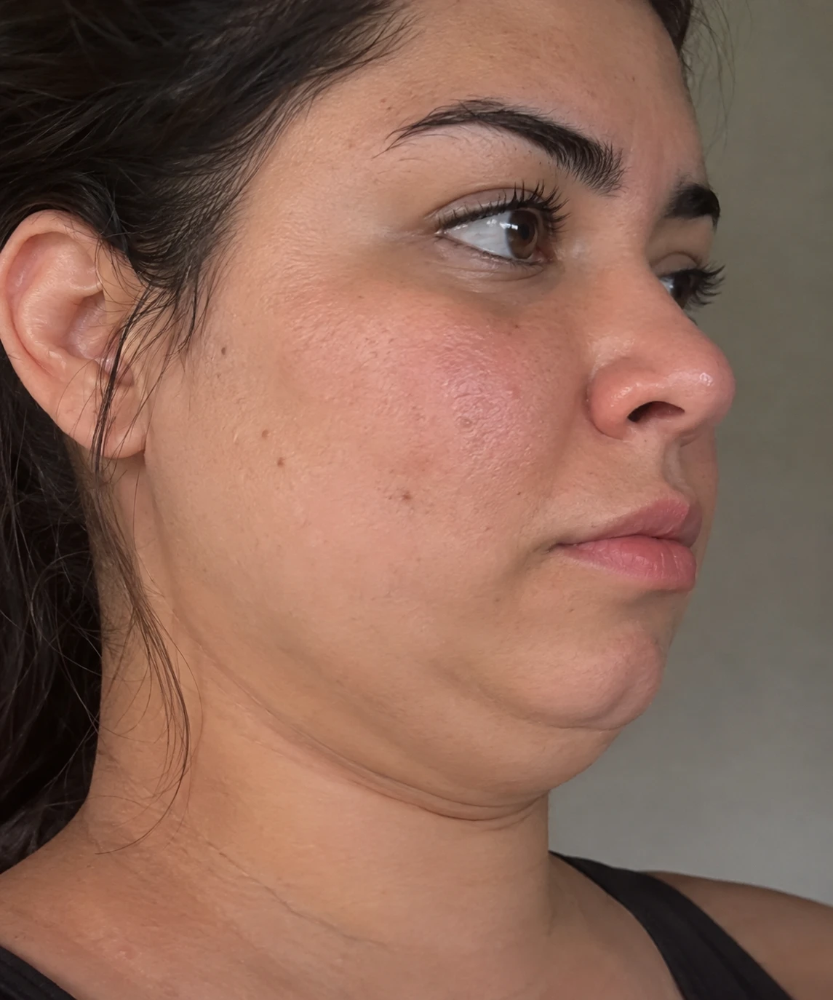
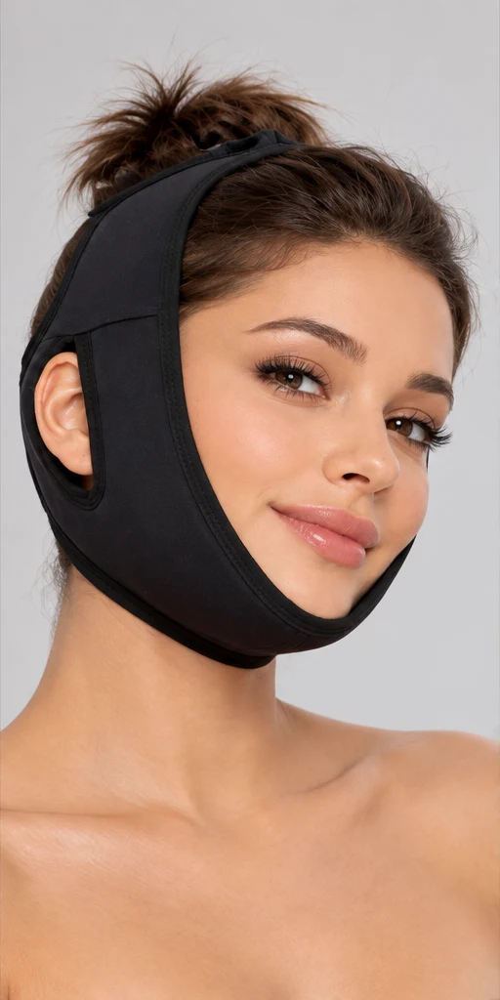
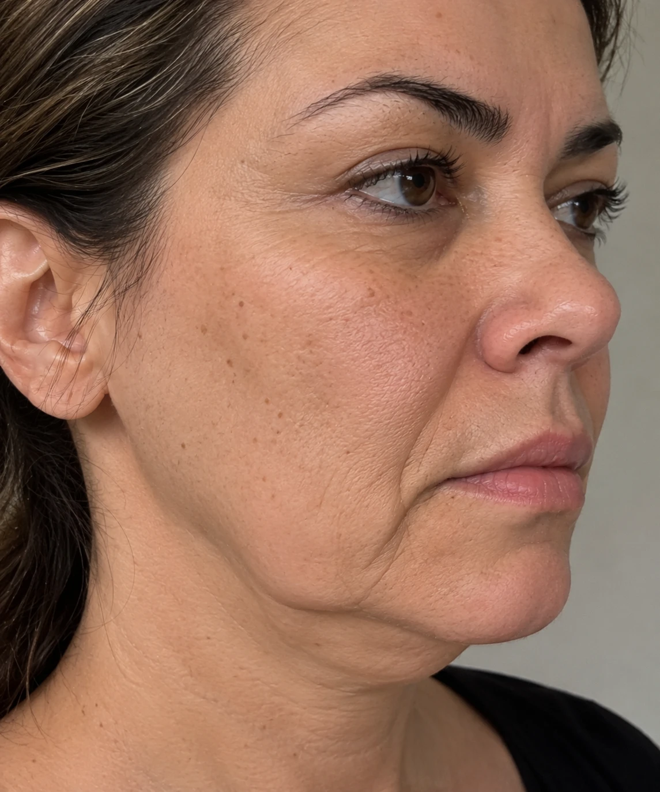
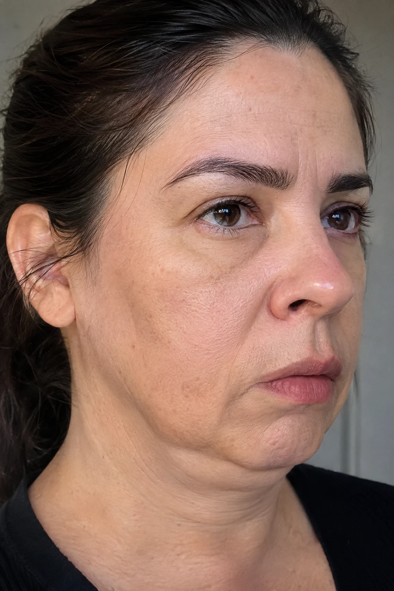
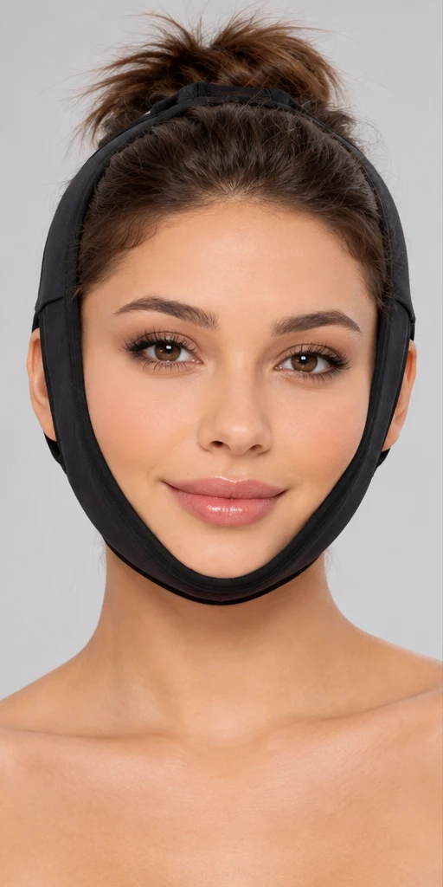
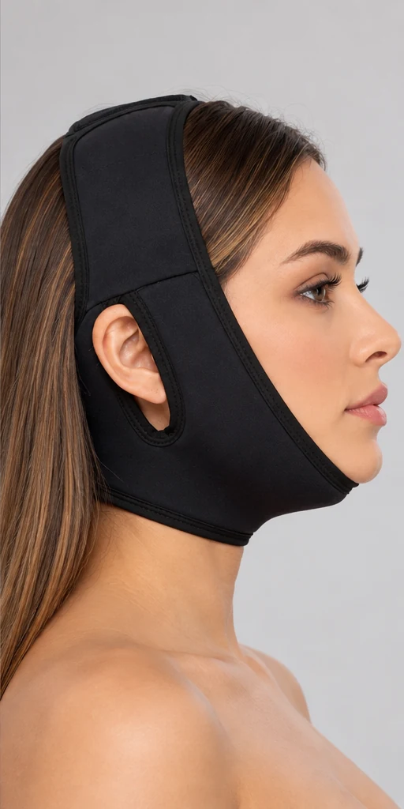

Lipo de papada
Apoio uniforme sob o queixo durante a recuperação.
Faixa facial pós-operatória
Envolve o queixo e o topo da cabeça com apoio uniforme, deixa as orelhas livres e se ajusta ao seu rosto. Use do jeito que o seu cirurgião orientar.
Comprar minha faixa
Envio para todo o Brasil · Compra segura ·
★★★★★ ·

Nos primeiros dias, o rosto está sensível e você vai usar a faixa por muitas horas. Faixas genéricas costumam apertar as orelhas, escorregar e incomodar a pele justamente quando você mais precisa de conforto.

Apoio uniforme sob o queixo durante a recuperação.

Firmeza confortável no contorno do rosto e no pescoço.

Apoio ao pescoço com um ajuste que respeita a sua sensibilidade.
A indicação e o tempo de uso são definidos pelo seu cirurgião.


O fecho permite regular a pressão no seu rosto, sem precisar de ajuda.
A faixa passa ao redor das orelhas, sem apertar nem dobrar.
Tecido suave para ficar em contato com a pele por muitas horas.
Envolve a região de forma uniforme, do queixo até o topo da cabeça.
Apoie a parte mais larga da faixa sob o queixo.
Leve as tiras até o topo da cabeça e feche na pressão indicada pelo seu cirurgião.
As orelhas ficam livres e a faixa fica firme, sem machucar.
Use pelo tempo que o seu cirurgião indicar.
Se sentir dor, formigamento ou dificuldade para engolir, afrouxe a faixa e fale com o seu cirurgião.
Com uma fita métrica, meça .
Ainda com dúvida? Mande a sua medida no WhatsApp e a gente indica o tamanho certo.
Falar no WhatsApp| Tamanho | Medida (cm) |
|---|---|
| P | |
| M | |
| G |
Tudo o que você precisa para o seu pós-operatório.
Uma no rosto, outra lavando. Você nunca fica sem a faixa limpa.
Para quem vai usar por várias semanas e quer sempre uma reserva.
Formas de pagamento:
Ficou com dúvida? Fale com a gente no WhatsApp
Produto de apoio ao pós-operatório. Use conforme a orientação do seu cirurgião. Não substitui o acompanhamento médico.
Você tem 7 dias após o recebimento para desistir da compra, como garante o Código de Defesa do Consumidor.
Quem define o tempo de uso é o seu cirurgião, porque cada recuperação é diferente.
Se o seu cirurgião indicar uso à noite, sim. O ajuste e o tecido macio foram pensados para ficar muitas horas no rosto.
Não. Ela passa ao redor das orelhas e as deixa livres.
Use a tabela de medidas acima. Se ainda tiver dúvida, mande a sua medida no WhatsApp e a gente indica o tamanho.
O ideal é comprar antes da cirurgia, para a faixa chegar a tempo do primeiro dia de uso.
Postamos em até dias úteis. O prazo de entrega depende do seu CEP; fale com a equipe para receber a estimativa antes de comprar.
Garanta a sua faixa antes da cirurgia e chegue ao pós-operatório com tudo pronto.
Comprar minha faixa